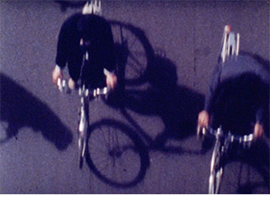

Carl Brown, Rose Lowder: Two Pictures / L’Invitation au Voyage / Beijing 1988 (1999 / 2003 / 2011)
Carl Brown, Rose Lowder / Carl Brown, Rose Lowder / Rose Lowder: Two Pictures / L’Invitation au Voyage / Beijing 1988 (1999 / 2003 / 2011) · 12m / 33m / 12m · 16mm
Two Pictures and L’Invitation au Voyage were made in collaboration with artist Carl Brown, who endlessly explored the possibilities of the chemistry of film. Beijing 1988 was filmed in China, May 1988, a year before the Spring 1989 Tiananmen rebellion, “where the ancient traditional philosophies and social practices confront the political and economical ideological ambitions of the State” (Light Cone). —
Cinema’s Garden: The Films of Rose Lowder
Programmed by: Olivia Hunter-Willke
The practice of French-Peruvian avant-garde filmmaker Rose Lowder (born 1941) concentrates on radical ways to refine photographic and temporal features of the image. Equipped with a 16mm Bolex and filming mostly natural elements, she composes and edits images in-camera, splicing frames together as the film strip continually advances over the lens. Filmed frame-by-frame, but not sequentially, Lowder emulsifies some of the skipped frames and leaves others blank, then uses the camera to rewind and film the frames she had previously not used. Using this method, “she has created a new viewing experience, in which two different situations are viewed simultaneously” (Kortfilm). Lowder pushes the boundaries of what it means to capture nature on film, shaping a cinematographic experience with her meticulous meditations. Her films present as treasures of the natural world, but not overly precious depictions: tactile exercises of what film encompasses at its most simple yet exacting modes of operation.
All 16mm prints courtesy of Light Cone.